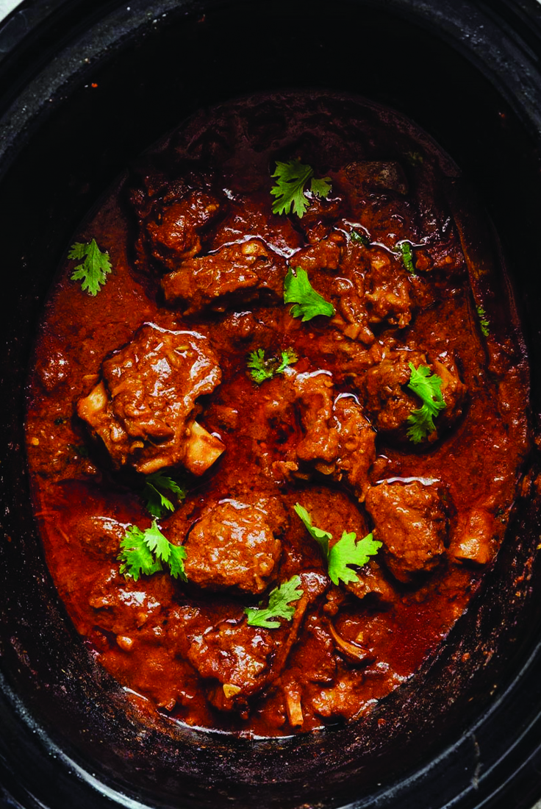

This slow cooked lamb curry recipe requires surprisingly little work for such spectacular, melt-in-your
mouth results. This lamb curry is an aromatic mix of fresh ginger cumin and coriander brings great depth
of
flavour for everyone.
Ingredients
2 tbsp vegetable oil
800g/lb 12oz lamb neck fillet, cut into 3.5cm chunks
2 chopped onions
1 cinnamon stick
4 cloves
6 garlic cloves
1 piece of fresh ginger root
3 tsp garam masala
1 tsp of ground coriander
1 tsp of ground turmeric powder
1-2 tsp hot chilli powder or chillies (depends on your preference)
600ml chicken broth
400g chopped tomatoes
800g lamb neck fillet
sea salt if possible
black pepper
handful of fresh coriander, finely chopped. Leave some to garnish
Steps
Heat a large saucepan and add one tablespoon of the vegetable oil and then the lamb. Cook over a high
heat for 3-4
minutes, or until the lamb is golden-brown all over, then remove and set aside.
Reduce the heat and add the cardamom, cinnamon, cloves along with a big pinch of salt and pepper to
taste and cook for
30 seconds until fragrant.
Add the onions, garlic, chillies, coriander and ginger and fry for 5-10 minutes, until golden-brown and
softened.
Add all the turmeric, garam masala, cumin and chilli powder and fry, stirring well, for one minute. Add
the tomatoes &
tomato puree and heat to bring to a simmer. Stir well, scraping the bottom of the pan to deglaze and
release any residue
at the bottom of the pan. Add the lamb and enough stock to just cover the lamb.
Heat the mixture until simmering, then partially cover and cook on a low heat for about 90 minutes, or
until the lamb is tender.
Taste if it needs more salt or pepper and stir well.
Serve the curry and rice in warmed bowls with a dollop of yoghurt on the side. Garnish with a scattering
of coriander.